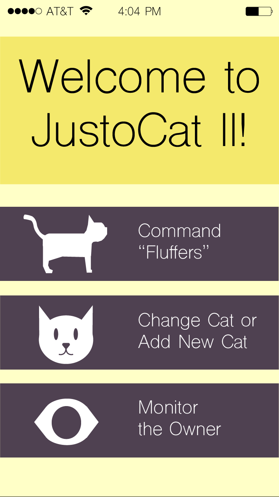
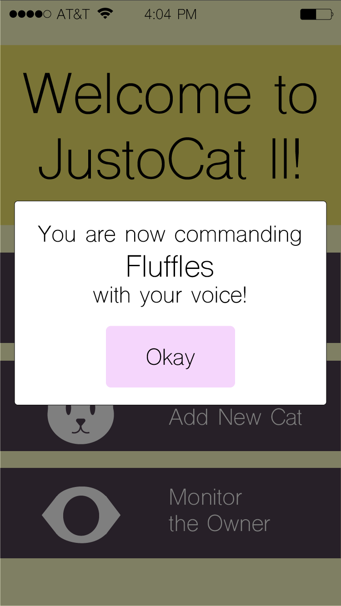
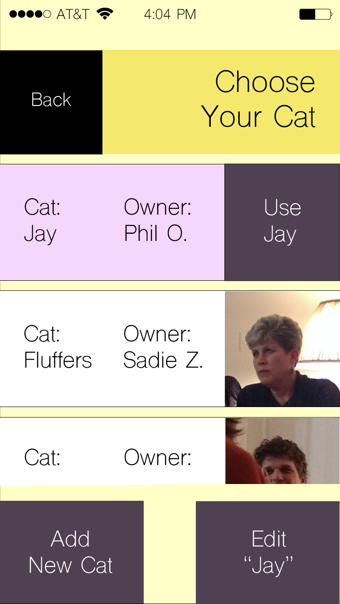
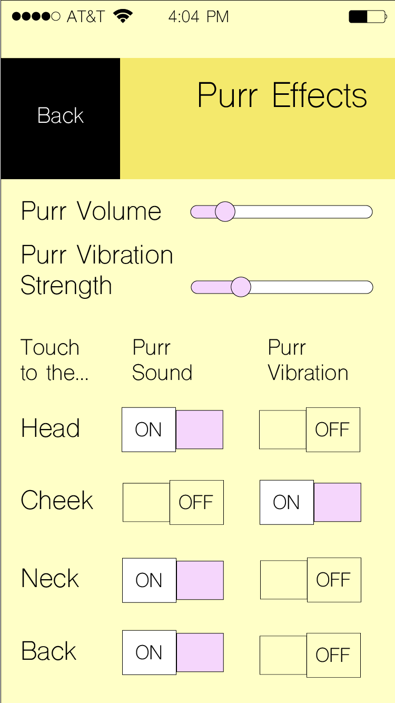
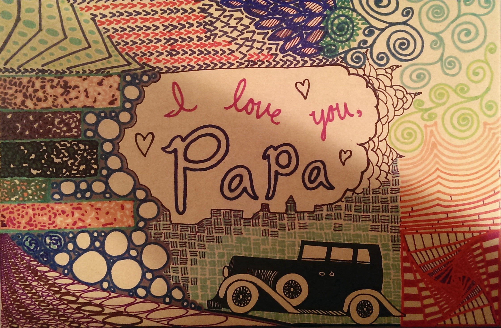
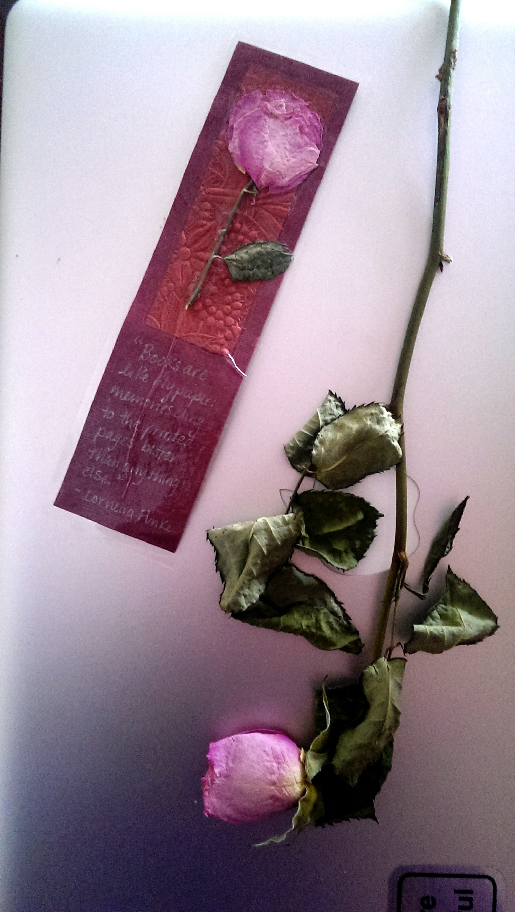
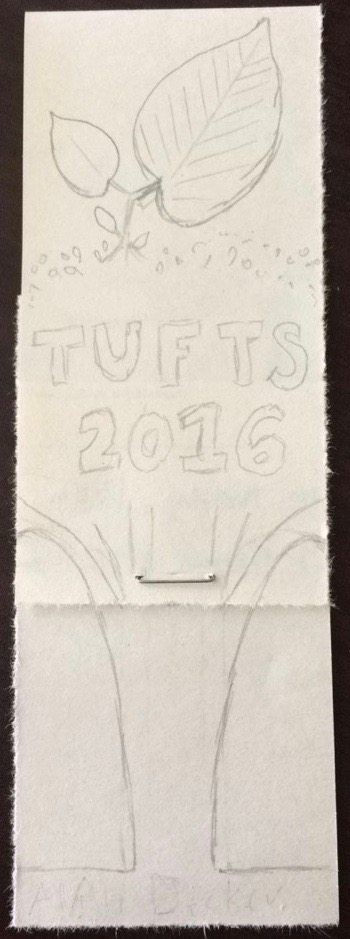
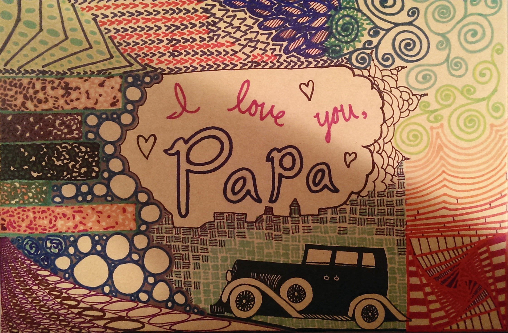
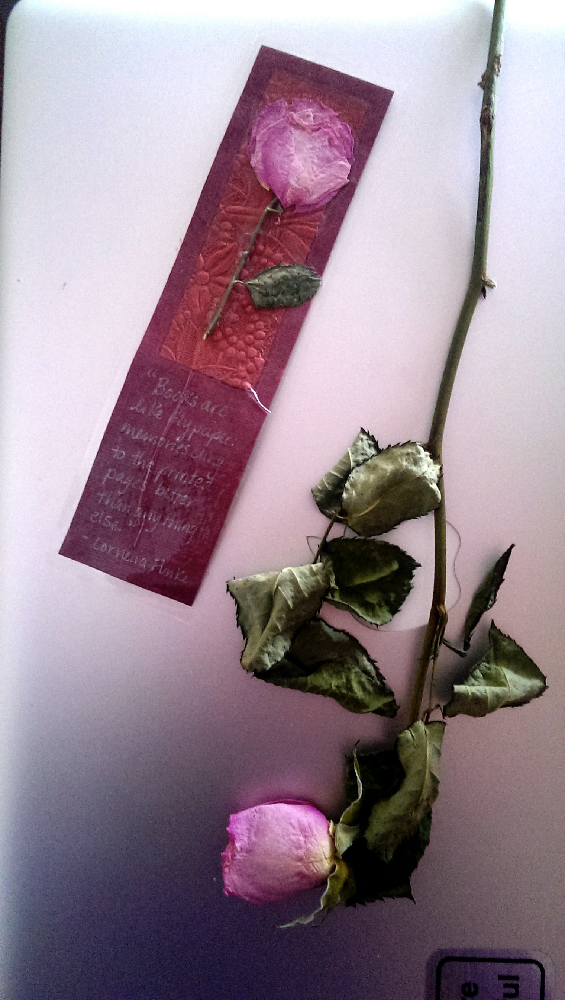
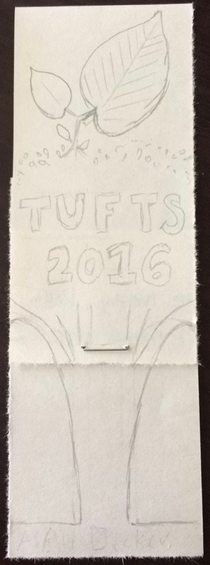

Ali Decker

Sonos Design Challenge (Winner)
In 12 days, a peer and I designed an app in which the user takes or chooses a picture, and then the app generates a playlist based on the contents of the photo. I designed the icons and app layout and did a bit of React Native coding, while he did the bulk of the coding. Together we brainstormed functionality and high-level implementation, and we both conducted preference testing of icons and app layout, as well as workflow testing once a prototype was developed. In the end, we won the design challenge and presented our project at Sonos' Hack Week.

My partner and I began by sketching out our ideas and searching the Web for similar apps. We also downloaded the current version of the Sonos music app and used this to think about branding, layout, and desired functions.


I designed all the icons and layouts for this app in Adobe Illustrator. My partner and I conducted informal preference testing to choose the best version of each icon, and informal experience testing to ensure that app workflow and layout made sense to users.

These were the designs off of which my partner and I based our coding for the functional app. Toggling the "i" button reveals explainable AI: it shows why the user-input image generated this particular music playlist in this particular genre. The "share" button (to the right of the song title) shares your image to a friend (via text, email, etc.), who can then load it into this app to get the same playlist you did.
In our experience testing we found that, on a smart phone, the control buttons at the bottom were too small to reliably hit with a large thumb.

This is the final version of our functional app, written in React Native and usable on Expo on both Android and iOS. We decided to place the primary control buttons at the bottom (including the photo buttons, as in last screen) since that is where the user's thumbs are when they use their phone. There is also new button here, next to the volume slider. This is the "connect to Sonos speakers" button. With Sonos, you can connect to multiple speakers at once - this is why the icon features two speakers and not just one. One thing I would add is branding in the upper left-hand corner.

JustoCat Mobile App
Here I present sample screens of a robotic therapy cat mobile application (JustoCat II), created as part of the Software User Interface Design course at Tufts University and later refined. All mockups were made in Adobe Illustrator.
I almost always start a design project with sticky notes to make an affinity diagram. If I cannot think of a title for a given group of sticky notes, then I regroup them until they form cohesive (i.e. nameable) groups.
When the user first opens the app, the JustoCat® logo appears where the buttons are for 3 seconds, then fades away to reveal the buttons.
The "Command [Cat Name]" button leads to a screen from which the user can control the cat through their phone rather than through speech recognition. This is important if the user does not want the person with dementia (the "owner") to know he/she is controlling the cat.
However, if stakeholders decided that voice commands were the way to go, I would implement a pop-up window that lets the user know which cat they are commanding, and that reiterates that the cat will be commanded by voice.
This is the progress page for adding a new cat personality to the list.
From the "Add Cat" page, one step in the cat personality definition process is to set the purr sound and vibration settings. This is important because people - particularly the elderly - have different combinations of sound and touch sensitivity that should be accommodated, especially in a therapy robo-animal. The other cat settings pages would have a similar look and feel to this one.
 This function allows for the cat to have multiple stored identities/personalities, perhaps for multiple "owners."
The caretaker (the user) may want to monitor the "owner." The "Activity Chart" shows things that might be indicative of the "owner's" mental level that day, such as amount of time spent petting the cat, frequently repeated phrases, etc.

EHANG 184 Tablet App
These are sample screens for a driving application for the inside of an autonomous flying service (EHANG 184), created as part of the Software User Interface Design course at Tufts University and later refined. Originally, I had all sidebar functionality showing at once, but once I learned about progressive disclosure, I replaced the full sidebar with the "swipe side for more" option to declutter the main page. All mockups were made in Adobe Illustrator.

I often like to make a flow diagram so that I can visualize where I would like my system to have a linear structure or a web structure, for example, or to ensure that the primary functions are available on the proper screens. In this case, I prioritized safety by enabling help functions on all screens.
Two requirements for this project were revenue-driven: ad space must occupy 15% of the screen at all times (unless there is a good reason not to include ad space on a given screen), and the EHANG shop must be prominently available.

Here is the welcome screen that greets the user when they enter the flying vehicle. A login is necessary to identify the user, in order to guarantee that the passenger is certified to fly (as a passive user or a pilot super-user) and to charge the proper user for their flight. In this screen, the user has requested the flying service ahead of time on the (not yet existent) EHANG 184 app or website, and so the user's name is already displayed and must log in to ensure that the proper user is using the vehicle at their reserved time.

The user must watch and agree to the safety briefing in order to fly. There is no way to skip the briefing - this way, even a regular user must watch before each flight, and will view updated videos whenever they are pushed.
For a user who did not reserve their flight or who reserved an amount of time rather than a specific flight with start and end points, they must type in their destination and waypoints. It is possible to set frequent destinations - those are the ones displayed when the user first clicks on the search bar. The user can also click the map to add a waypoint.

This is the in-flight screen. The user may access additional settings and pages by clicking or swiping on the sidebars. They may also choose to land, return, or hover at any time - I chose to have these available to make the user feel in control and to make users feel more comfortable about flying in a self-driving vehicle. These buttons are on the right side of the screen because this user has indicated that they are right-handed on their profile page online.

This screen shows the "Cabin Settings" sidebar selected during flight.

This screen displays the night mode coloring for easier reading in darkness. It also shows the "Entertainment" sidebar selected with the contact button selected as well. With more time, I would explore ways to declutter this screen, perhaps by showing a separate contact page at the expense of seeing the map.

When the user selects the "Help" button, an EHANG representative speaks to them over the intercom, gives typed instructions on-screen, and circles the appropriate portions of the screen to focus on. I chose not to have a video chat because I thought the video would distract the user from their situation and add to their mental workload, both of which would increase stress level and decrease performance.

This is the in-flight screen for a left-handed super-user (certified pilot): they can drive the vehicle themselves using the joystick, and have the option to switch to auto-pilot (what most users use) at any time. A right-handed user would have the joystick to the right of the Hover button.

The user can change some settings during flight, but not all.
Users can change accent color in-flight because this is where they interact with the driving app - unless some sample screens are shown on the EHANG website profile page, the user would not see what the colors look like in context save for in the actual app.
Users can connect a different phone in-flight to have access to texting, calling, and music through the vehicle mic and speakers.
Users can set and name new frequent destinations in-flight because it is during flight that it is most convenient for users to think about where they could see themselves traveling frequently in this flying vehicle. They also have the power to edit destinations in case they typed them incorrectly online.
 




